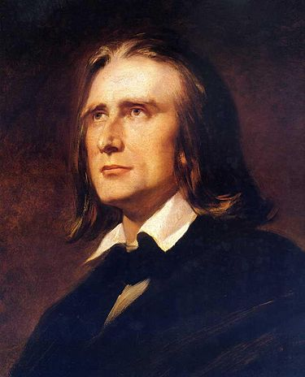

Életrajz
Liszt Ferenc (németül Franz Liszt; Doborján, 1811. október 22. – Bayreuth, 1886. július 31.) magyar zeneszerző, zongoraművész, karmester és zenetanár, a 19. századi romantika egyik legjelentősebb zeneszerzője.
Apja, Liszt Ádám, Esterházy herceg hivatalnoka, korán felismerte fiának kivételes zenei tehetségét, és minden lehetőséget megragadott kibontakoztatására. Liszt kilencéves korában már nyilvánosság előtt zongorázott Sopronban és Pozsonyban, majd hamarosan műpártoló főurak támogatásával Bécsben folytathatta tanulmányait Czerny és Salieri tanítványaként. 1822. december 1-jén mutatkozott be Bécsben. A 11 éves Liszt első koncertje nagy feltűnést keltett. Itt találkozott Beethovennel, Czerny közvetítésével, aki korábban Beethoven tanítványa volt.[2] Itt is jelent meg nyomtatásban első műve, variációi ugyanarra a Diabelli-témára (keringőre), amelyekre Beethoven híres zongoraművét írta. Az ifjú Liszt bécsi szereplését követően négy nagy sikerű pesti, illetve budai koncertje után 1823 őszén apjával Franciaországba utazott, és az európai művészeti élet egyik központjába, Párizsba költözött.

...
Felvételét a párizsi Conservatoire-ba Cherubini, az intézmény vezetője gátolta meg, így visszatért Bécsbe, ahol magánúton zeneelméletet és ellenpontozást tanult, közben hangversenykörútra indult. Londoni bemutatkozását számos újabb meghívás követte Franciaországba, Svájcba, majd ismét Angliába. Műsorán többnyire a népszerű operákra írt ábrándok, parafrázisok szerepeltek. 1827-ben egy időre a francia fővárosban telepedett le, ahol tehetségének köszönhetően a társasági élet ünnepelt hőse lett. Itt ismerkedett meg Chopinnel, akitől eltanulta a zongorajáték árnyalatait, valamint Berliozzal, akitől a zenekari nyelvet és a programzene új vívmányait sajátította el. Az 1830-as évek végén újabb hangversenykörutakra indult, bejárta egész Európát, Portugáliától Oroszországig. 1835-ben a genfi konzervatórium tanára lett. Az 1838-as pesti árvízkatasztrófa károsultjait Bécsben rendezett hangversenyeinek jövedelmével támogatta. Ugyanilyen bőkezűen járult hozzá néhány évvel később a bonni Beethoven-emlékmű létrehozásához. Az oroszországi hangversenykörutak során megismerkedett az orosz komponisták művészetével és szerelmével, Carolyne zu Sayn-Wittgenstein hercegnővel, aki a későbbiekben közreműködött irodalmi munkásságában. A negyvenes évek elején Weimarban az udvari színház karmestere lett, itt népszerűsítette és vezényelte kortársai műveit, valamint tanította a kontinens minden sarkából érkező pályakezdő muzsikusokat és komponistákat. Liszt élete utolsó évtizedeit Weimar, Róma és Budapest között osztotta meg. A budapesti Zeneakadémia első éveiben készséggel segítette a magyar zenekultúra újonnan kialakuló központját, és vállalta, hogy az év néhány hónapjában itt tanítson.
...
Liszt rendkívül termékeny zeneszerző volt. Műveinek nagy részét zongorára komponálta, ezek zömének eljátszásához rendkívüli technikai tudás szükséges. Alkotásainak viszonylagos ismeretlensége azzal magyarázható, hogy rengeteg darabot komponált: mintegy 400 eredeti művének zöme virtuóz zongoramű, szimfónia, szimfonikus költemény, mise. Összesen kb. 1400 művet komponált (beleszámolva eredeti műveit, átiratait stb.), amivel minden idők egyik legtermékenyebb zeneszerzője. A programzene lelkes támogatója volt. Zenei átiratokkal is foglalkozott, és az olyan legbonyolultabb zenekari művekkel is megbirkózott, mint például Beethoven szimfóniái. Művei a világ minden részén elmaradhatatlan elemei a koncertprogramoknak. Zenei munkássága mellett rengeteg esszét írt különböző témákról: zeneszerzők társadalmi helyzete, műelemzések stb.